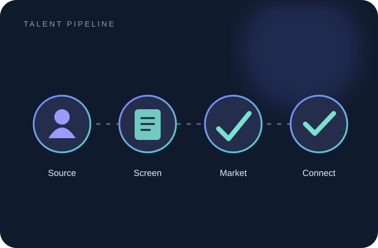
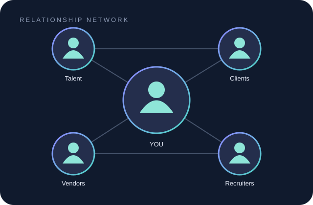

◎
Candidate marketing
Source, screen, position, and market consultants in alignment with job requirements and client expectations.
PORTFOLIO / 2026
US IT BENCH SALES RECRUITER
I'm Biswas Devu — a Senior US IT Bench Sales Recruiter focused on candidate marketing, recruiter relationships, and end-to-end placement coordination.
I work across the US IT staffing ecosystem, helping present qualified consultants to relevant opportunities while keeping communication, coordination, and follow-through organized.
Source, screen, position, and market consultants in alignment with job requirements and client expectations.
Build professional connections with US-based recruiters and coordinate clear, timely communication.
Support interview scheduling, consultant updates, reporting, and placement activities through the recruitment cycle.
A practical mix of staffing knowledge, candidate presentation, communication, and team support.
Technology areas are based on the candidate profiles and roles described in my resume.
A clear, coordinated workflow helps keep candidate marketing focused and recruiter communication moving.

Understand the requirement, identify relevant consultants, and align profiles with the opportunity.

Maintain professional communication with consultants, recruiters, and staffing partners.

Support interview steps, follow-ups, consultant updates, and organized reporting.
Custom conceptual illustrations — not screenshots of internal company systems or client work.
Professional experience in US IT bench sales recruitment with additional responsibility for team training and reporting.
Winsai Technologies LLC · Hyderabad
Highlights and responsibilities documented in my professional experience.
Placement outcomes are described qualitatively in the resume; specific placement counts and performance percentages were not provided.
Sita Rama Degree College · 65.65%
Sita Rama Junior College · 69.61%
Madhuri Vidyalaya · 80.75%
For US IT staffing opportunities, candidate marketing, or professional collaboration, feel free to reach out.